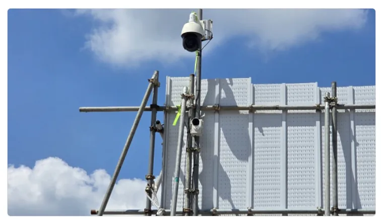
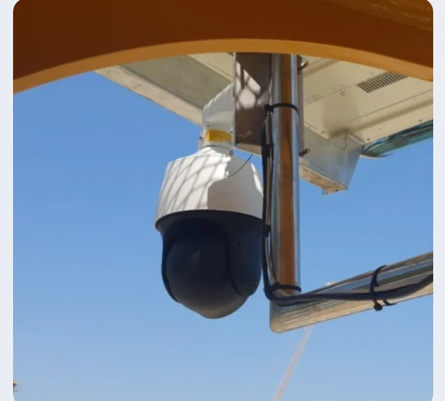
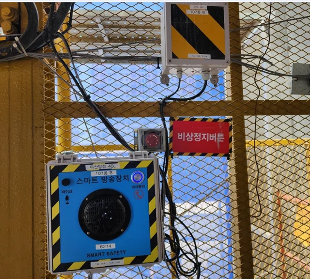
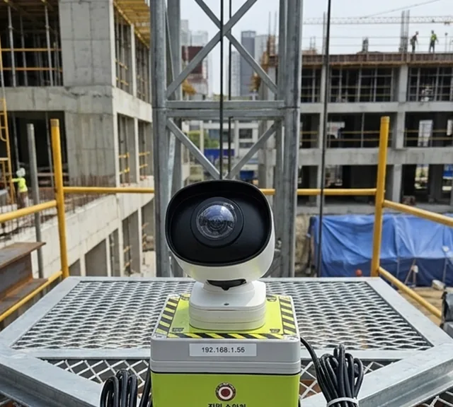
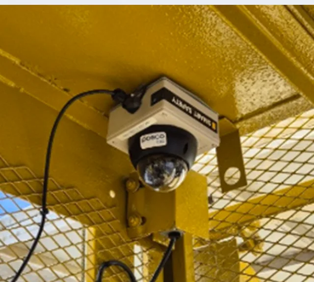
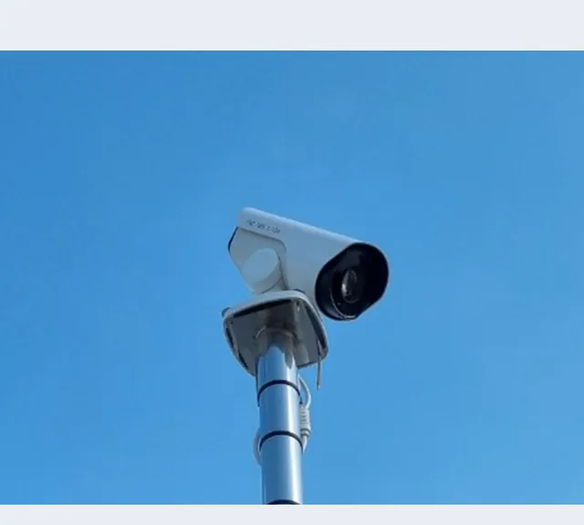
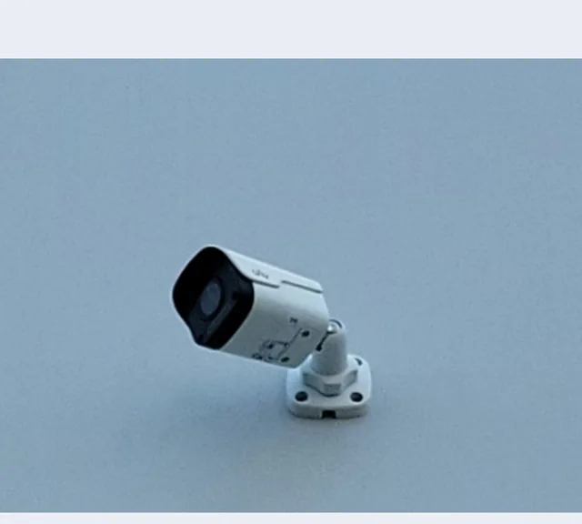
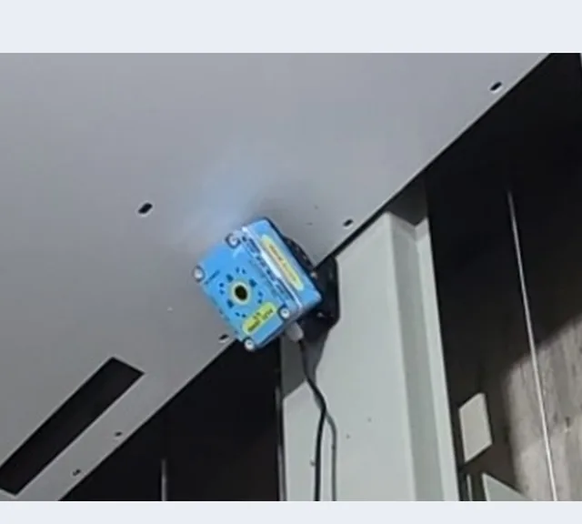
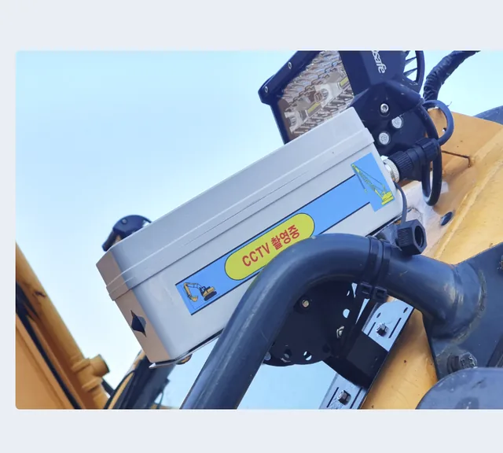
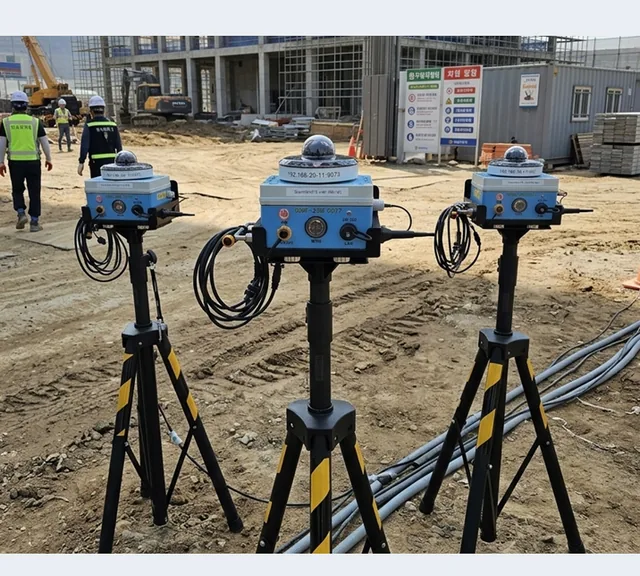

스마트 영상관제 시스템
사각지대 없는 현장,
실시간 영상 관제와 양방향 소통
공정별 구조와 동선, 위험 특성에 맞춘 AI CCTV로
사각지대까지 실시간 감시합니다.
현장 사무소와 스마트폰에서 영상을 확인하고,
무전·음성방송으로 신속하게 소통합니다.

도입 효과
- 01
고소 · 양중 · 굴착 등 고위험 작업을 원격으로 상시 확인
- 02
사고 발생 시 영상 기록을 통한 원인 분석과 증빙 확보
- 03
이상 상황 발견 즉시 음성방송과 무전으로 작업 중지와 대피 지시
- 04
공정 변화에 따라 카메라를 이전 설치해 효율적으로 운영
- 05
현장 전경 영상으로 공정 진행 공유와 발주처 보고에 활용
제품 구성

타워 CCTVPTZ CCTV타워크레인에 설치해 현장 전체를 조망하고, 확대 기능으로 먼 거리의 작업 상황까지 확인합니다.

호이스트 CCTV호이스트 CCTV (무전기 포함)호이스트 운전자와 무전으로 소통하며 운행 상황을 영상으로 확인합니다.

호이스트 CCTV리프트 상부 CCTV광각 영상으로 리프트 상부 작업 상황을 감시합니다.

호이스트 CCTV호이스트 내부 CCTV호이스트 내부 탑승 상황을 영상으로 확인합니다.

휀스 CCTV회전형 PTZ CCTV회전과 확대로 넓은 현장 외곽을 효율적으로 감시합니다.

휀스 CCTV고정형 PTZ BULLET CCTV출입구와 주요 지점을 지속적으로 감시합니다.

E/V CCTVE/V CCTV상시 확인하기 어려운 사각지대를 감시해 추락사고를 예방합니다.

중장비 CCTV중장비 CCTV굴착기 등 중장비의 작업 반경 내 근로자와 주변 상황을 확인해 충돌과 협착 사고를 예방합니다.

이동형 CCTV이동형 CCTV공정에 따라 필요한 위치로 옮겨 설치할 수 있어 임시 작업 구역 감시에 적합합니다.
- 이동형 CCTV이동형 스마트 영상방송 CCTV
영상 감시와 함께 원격 음성방송을 지원해 위험 상황에 즉시 경고합니다.
- 이동형 CCTV태양광 CCTV
전원 확보가 어려운 초기 공정이나 외곽 지역에도 태양광으로 설치해 운영합니다.
- 지하층 CCTV지하층 DOME CCTV
통신 환경이 열악한 지하 공간에서도 안정적으로 내부를 감시합니다.
- 지하층 CCTV개구부 CCTV
개구부 주변을 감시해 추락 위험 구역을 관리합니다.